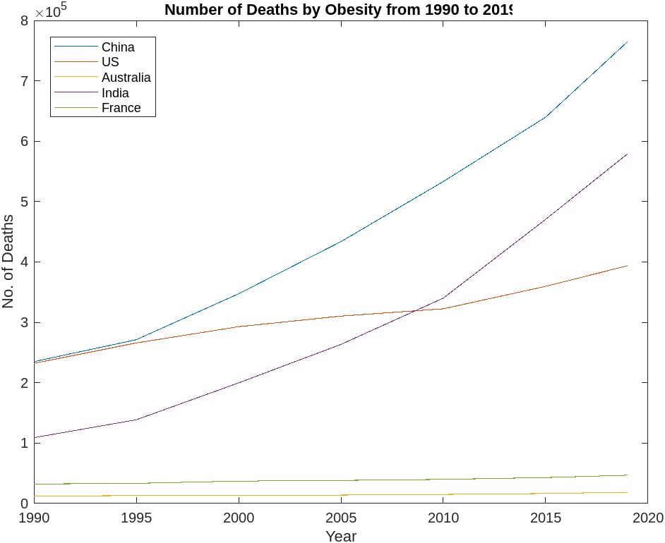

Diabetes
Result

Peason Correlation
Data: China Diabetes and Working Hours
t = 4.338, df = 5, p-value = 0.007443
95 percent confidence interval:0.4107306 0.9835596
sample estimates:cor 0.8888606
Data: US Diabetes and Working Hours
t = -0.49279, df = 5, p-value = 0.643
95 percent confidence interval:-0.8332328 0.6418686
sample estimates:cor -0.2152185
Data: Australia Diabetes and Working Hours
t = -6.2698, df = 5, p-value = 0.001515
95 percent confidence interval:-0.9916052 -0.6495828
sample estimates:cor -0.9418921
Data: India Diabetes and Working Hours
t = 10.708, df = 5, p-value = 0.000123
95 percent confidence interval:0.8591623 0.9969982
sample estimates:cor 0.9788836
Data: France Diabetes and Working Hours
t = -7.7114, df = 5, p-value = 0.0005853
95 percent confidence interval:-0.9943307 -0.7493793
sample estimates:cor -0.9604374
Obesity
Result
Peason Correlation
Data: China Obesity and Working Hours
t = 2.9912, df = 5, p-value = 0.0304
95 percent confidence interval:0.1206715 0.9693387
sample estimates:cor 0.8009456
Data: US Obesity and Working Hours
t = -1.4241, df = 5, p-value = 0.2137
95 percent confidence interval:-0.9186256 0.3625441
sample estimates:cor -0.5371706
Data: Australia Obesity and Working Hours
t = -5.4243, df = 5, p-value = 0.002885
95 percent confidence interval:-0.9890123 -0.5644538
sample estimates:cor -0.9245266
Data: India Obesity and Working Hours
t = 9.6909, df = 5, p-value = 0.0001987
95 percent confidence interval:0.8314092 0.9963534
sample estimates:cor 0.9743975
Data: France Obesity and Working Hours
t = -5.0058, df = 5, p-value = 0.004085
95 percent confidence interval:-0.9872760 -0.5120854
sample estimates:cor -0.9130456
Hypertension
Result

Peason Correlation
Data:China Hypertension and Working Hours
t = 4.338, df = 5, p-value = 0.007443
95 percent confidence interval: 0.4107306 0.9835596
sample estimates:cor 0.8888606
Data:US Hypertension and Working Hours
t = 3.6796, df = 5, p-value = 0.0143
95 percent confidence interval: 0.2848084 0.9781506
sample estimates:cor 0.8545788
Data:Australia Hypertension and Working Hours
t = 2.5857, df = 5, p-value = 0.04909
95 percent confidence interval: 0.007762072 0.961675033
sample estimates:cor 0.7563988
Data: India Hypertension and Working Hours
t = 10.708, df = 5, p-value = 0.000123
95 percent confidence interval: 0.8591623 0.9969982
sample estimates:cor 0.9788836
Data: France Hypertension and Working Hours
t = 1.8604, df = 5, p-value = 0.1219
95 percent confidence interval: -0.2189107 0.9399305
sample estimates:cor 0.6395845
Summary
In the above chronic disease data, it shows that the number of death smoothly increased year by year from 1990 to 2019
All data were correlated. An interesting result is that all the Asia regions get a positive correlation coefficient and The others get negative in hypertension.
Fast Food Culture
Result: Worldwide


Peason Correlation
Correlation between World Disease and Uber Eat Cities
Data: Hypertension
t = 3.2386, df = 1, p-value = 0.1907
sample estimates:cor 0.955487
Data: Obesity
t = 3.3679, df = 1, p-value = 0.1837
sample estimates:cor 0.9586343
Data: Diabetes
t = 3.7816, df = 1, p-value = 0.1646
sample estimates:cor 0.9667699
Correlation between World Disease and Uber Eat Restaurants
Data: Hypertension
t = 18.844, df = 1, p-value = 0.03375
sample estimates:cor 0.9985949
Data: Obesity
t = 23.706, df = 1, p-value = 0.02684
sample estimates:cor 0.9991115
Data: Diabetes
t = 83.023, df = 1, p-value = 0.007668
sample estimates:cor 0.9999275

Correlation between World Disease and Uber Eat Users
Data: Hypertension
t = 10.854, df = 1, p-value = 0.05849
sample estimates:cor 0.9957828
Data: Obesity
t = 12.317, df = 1, p-value = 0.05157
sample estimates:cor 0.9967203
Data: Diabetes
t = 19.63, df = 1, p-value = 0.0324
sample estimates:cor 0.9987049
Correlation between World Disease and Uber Eat Gross Booking
Data: Hypertension
t = 14.722, df = 1, p-value = 0.04318
sample estimates:cor 0.9977011
Data: Obesity
t = 17.537, df = 1, p-value = 0.03626
sample estimates:cor 0.9983782
Data: Diabetes
t = 37.239, df = 1, p-value = 0.01709
sample estimates:cor 0.9996396
Summary
All the data is related to the Uber Eats application, It seems the need for takeaway service is smoothly increasing in these few years. There has been a big rocket starting from 2019, it seems Covid-19 and people's living habits may be the reason for a big increase starting from 2019.
All data was correlated with a positive correlation coefficient in both cities, restaurants, users, and gross booking of Uber Eat. It showed that the Uber Eat service keeps increasing that may easily cause chronic disease as a takeaway food culture.
Result:Number of Mc Donald in the world
Correlation between World Disease and Number of Mc Donald
Data: Hypertension
t = 17.983, df = 1, p-value = 0.03536
sample estimates:cor 0.9977957
Data: Obesity
t = 17.537, df = 1, p-value = 0.03626
sample estimates:cor 0.9984574
Data: Diabetes
t = 39.304, df = 1, p-value = 0.01619
sample estimates:cor 0.9996765
Result: China
As Uber Eat appllication is not popular in China therefore I selected the number of online takeaways

Peason Correlation
Hypertension:0.335055 Obesity:0.8642624 Diabetes:0.5619049
Result:Number of Mc Donald and KFC in China
Correlation between China's Disease and Number of Mc Donald
Data: Hypertension
t = 3.0987, df = 2, p-value = 0.09026
sample estimates:cor 0.9097359
Data: Obesity
t = 3.0097, df = 2, p-value = 0.09494
sample estimates:cor 0.9050635
Data: Diabetes
t = 1.2714, df = 2, p-value = 0.3314
sample estimates:cor 0.6685622
Correlation between China's Disease and Number of KFC
Data: Hypertension
t = 2.9436, df = 2, p-value = 0.09863
sample estimates:cor 0.9013682
Data: Obesity
t = 2.9665, df = 2, p-value = 0.09733
sample estimates:cor 0.9026694
Data: Diabetes
t = 1.1823, df = 2, p-value = 0.3586
sample estimates:cor 0.641402
It show that China fast food culture is keep incrasing with the increase of diseases.
Result:Number of Mc Donald in US
Correlation between US and Number of Mc Donald
Data: Hypertension
t = -6.6547, df = 1, p-value = 0.09495
sample estimates:cor -0.9888973
Data: Obesity
t = -7.903, df = 1, p-value = 0.08013
sample estimates:cor -0.9920893
Data: Diabetes
t = -7.0375, df = 1, p-value = 0.08986
sample estimates:cor -0.9900548
The number of mc donald is decrasing when disease increase, the number of fast food culture may not be the reason of disease of Amercian
Summary
All the data is related to Western fast food restaurants like McDonald's and KFC, It seems the need for fast food culture is smoothly increasing in the Asia region and decreasing in US.
All data of China was correlated with a positive correlation coefficient and data of US was correlated with a negative correlation.